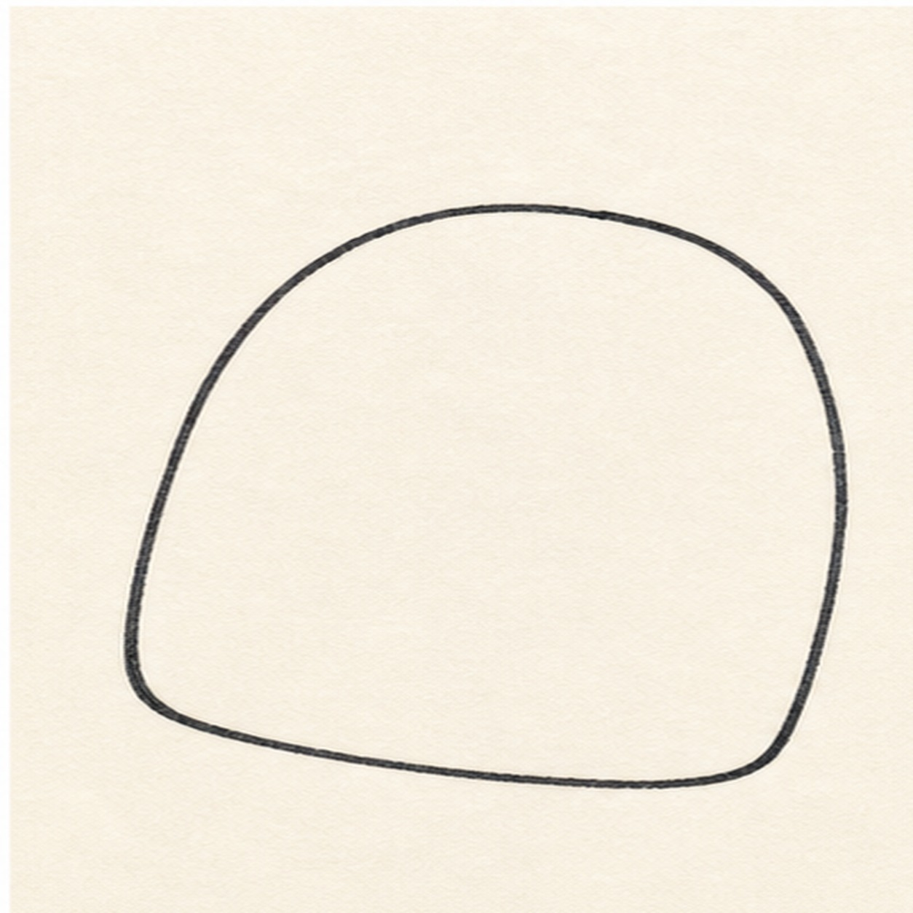
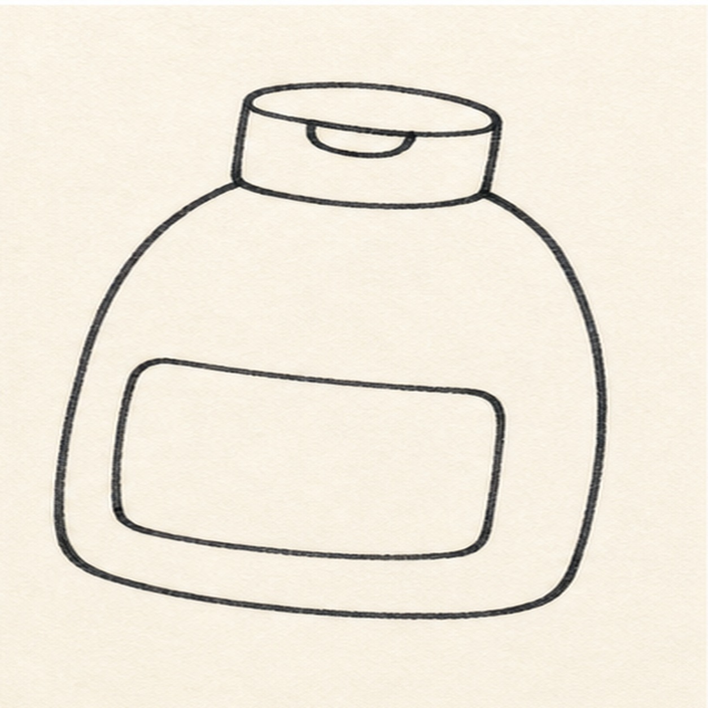
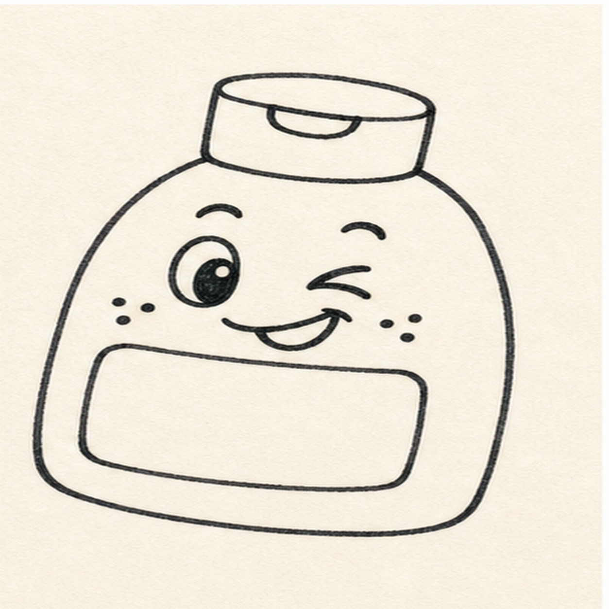
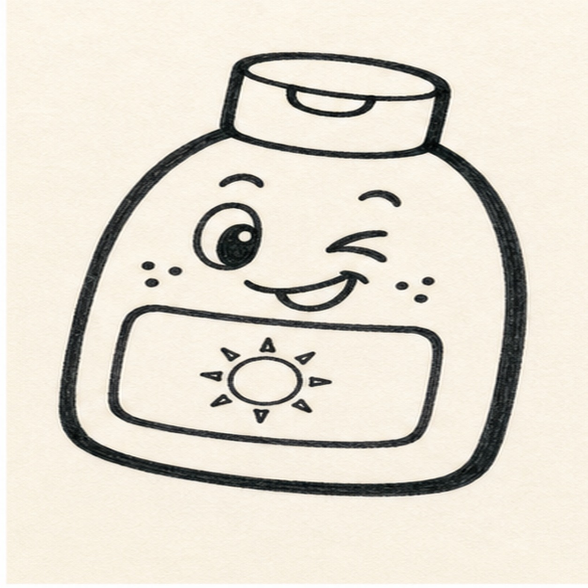
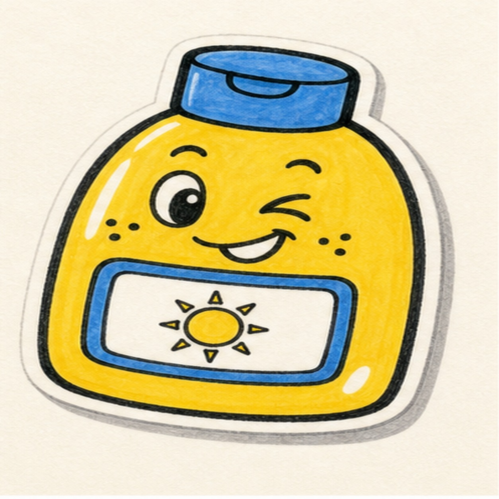

Felt-tip marker mode
Let's doodle a sunscreen bottle sticker
Treat this as one playful practice round: sketch the idea loosely, simplify the shapes, then commit with confident marker outlines and bright fills.
-
01

Shape the bottle
Draw a squat rounded bottle body with a slight sticker tilt and room for a face and label.
Doodle tip: Round the bottom corners more than the top corners. That gives the bottle a soft cartoon shape.
-
02

Add cap and label
Add a flip cap on top and a blank rounded label panel across the front.
Doodle tip: Keep the label empty. A simple sun symbol later will read cleaner than tiny words.
-
03

Give it a wink
Draw one open eye, one wink eye, raised brows, cheek dots, and a sideways grin above the label.
Doodle tip: This expression should feel different from a basic smiley face. Push the wink and cheek dots.
-
04

Ink the sun badge
Add a small sun badge on the label, then trace the bottle, cap, label, and face with thick black marker.
Doodle tip: Ink only the shapes you already placed. The outline should make the sticker bolder, not redesign it.
-
05

Fill the sunny colors
Fill the bottle yellow, add blue to the cap and label edge, leave white shine gaps, and add a gray sticker shadow.
Doodle tip: Let marker strokes show. A little streakiness keeps the bottle handmade.
-
06

Seal the sunny sticker
Reinforce the existing outlines, deepen the marker fills, and sharpen the highlights and shadow already on the page.
Doodle tip: Stop before adding text or extra beach props. The wink, sun badge, and bright fill do the work.